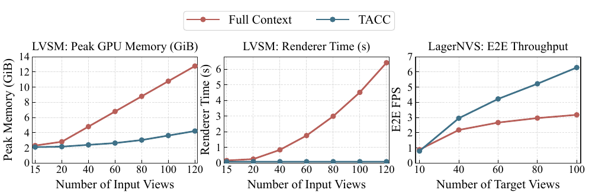
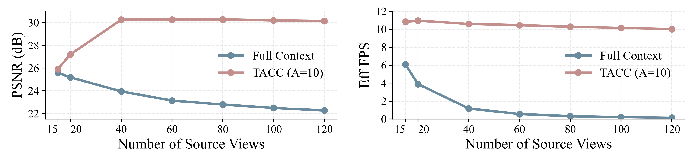

TL;DR
TACC organizes dense source context once, then allocates a fixed decoder-visible budget to target-relevant evidence for each requested view.

Abstract
Recent feed-forward approaches mark a paradigm shift in novel view synthesis by eliminating the reliance on per-scene optimization, directly inferring 3D representations from input views. However, their reliance on global scene-token context incurs substantial memory and latency overhead, constraining their ability to handle increasingly dense source-view contexts. Compressing source representations offers an intuitive way to limit this token budget. Prior general-purpose compression methods are not tailored for novel view synthesis, as their fixed, target-agnostic nature fails to adapt evidence allocation to individual target views. To overcome this, we introduce TACC, a target-aware compression module tailored for feed-forward latent NVS. Specifically, TACC organizes each source view into a progressive carrier hierarchy. Driven by source-target geometric relevance, it adaptively retrieves tokens to dynamically allocate exact computational quotas. This selective retrieval directly yields a compact, target-conditioned representation. Extensive experiments on the RE10K demonstrate that under dense input settings, TACC accelerates inference by 9.23× and 64× over the LagerNVS and LVSM. Project page at TACC.
Method

TACC follows an encode once, allocate on demand principle. Before a target view is specified, TACC organizes each source-view representation into a progressive Carrier hierarchy that supports multiple readout granularities and can be reused across targets. At target time, TACC estimates source-target geometric relevance, preserves the highest-relevance source view at full granularity, and allocates the remaining token budget across the support views. It then reads the corresponding per-view frontiers and concatenates them into a compact target-conditioned representation that is passed to the unchanged rendering pathway.
Comparison Experiments
Within each setting, all methods use identical scene IDs and source/target view indices. Compressed methods are matched to the same decoder-visible token budget. For CLiFT, Native denotes its original compression pathway retrained under matched experimental settings, with the pretrained encoder and renderer kept frozen. Drag each vertical divider to compare the backbone and its TACC variant at the same frame.
Visualization on DL3DV with CLiFT
Visualization on DL3DV with LagerNVS
Visualization on RealEstate10K with LVSM
Results on DL3DV with LagerNVS
Table 1: Main quantitative comparison on DL3DV with increasing source-view counts. Compression methods use a fixed A = 10 decoder-visible budget and identical source views within each setting; Full Context uses the complete LagerNVS representation as an uncompressed reference.
| Method | 80 Source Views | 100 Source Views | 120 Source Views | |||||||||
|---|---|---|---|---|---|---|---|---|---|---|---|---|
| PSNR ↑ | SSIM ↑ | LPIPS ↓ | Eff. FPS ↑ | PSNR ↑ | SSIM ↑ | LPIPS ↓ | Eff. FPS ↑ | PSNR ↑ | SSIM ↑ | LPIPS ↓ | Eff. FPS ↑ | |
| LagerNVS-based | ||||||||||||
| Full Context | 25.6766 | 0.8064 | 0.0963 | 4.40 | 25.2932 | 0.7953 | 0.1012 | 3.57 | 24.9604 | 0.7851 | 0.1056 | 2.99 |
| ToMe | 20.0344 | 0.5442 | 0.3548 | 31.43 | 19.7096 | 0.5304 | 0.3737 | 31.00 | 19.2548 | 0.5122 | 0.3991 | 31.34 |
| DivPrune | 21.7624 | 0.6560 | 0.2053 | 31.54 | 21.5944 | 0.6479 | 0.2106 | 31.07 | 21.4627 | 0.6420 | 0.2147 | 31.08 |
| ZPressor | 24.1568 | 0.7720 | 0.1381 | 31.26 | 24.0773 | 0.7684 | 0.1396 | 31.61 | 24.5947 | 0.7872 | 0.1338 | 31.52 |
| Ours | 27.3415 | 0.8649 | 0.0791 | 27.95 | 26.8787 | 0.8523 | 0.0833 | 28.12 | 26.4732 | 0.8416 | 0.0869 | 27.96 |
Results on RealEstate10K
Table 2: RE10K comparison with increasing source-view counts. LagerNVS and LVSM Decoder-Only use matched source/target-view settings; compressed methods use a fixed A = 10 budget, while Full Context uses all source tokens as an uncompressed reference.
| Method | 80 Source Views | 100 Source Views | 120 Source Views | |||||||||
|---|---|---|---|---|---|---|---|---|---|---|---|---|
| PSNR ↑ | SSIM ↑ | LPIPS ↓ | Eff. FPS ↑ | PSNR ↑ | SSIM ↑ | LPIPS ↓ | Eff. FPS ↑ | PSNR ↑ | SSIM ↑ | LPIPS ↓ | Eff. FPS ↑ | |
| LagerNVS-based | ||||||||||||
| Full Context | 28.5991 | 0.9066 | 0.0681 | 4.38 | 28.0454 | 0.8976 | 0.0718 | 3.54 | 27.5702 | 0.8890 | 0.0754 | 2.97 |
| ToMe | 22.1035 | 0.7030 | 0.2889 | 31.51 | 21.8357 | 0.6915 | 0.3070 | 31.05 | 21.4481 | 0.6780 | 0.3276 | 31.50 |
| DivPrune | 25.1277 | 0.8298 | 0.1215 | 31.46 | 24.9600 | 0.8252 | 0.1240 | 31.42 | 24.8335 | 0.8217 | 0.1259 | 31.12 |
| ZPressor | 27.9540 | 0.8999 | 0.0854 | 31.28 | 27.7685 | 0.8961 | 0.0868 | 31.41 | 27.5760 | 0.8921 | 0.0882 | 31.20 |
| Ours | 30.2044 | 0.9285 | 0.0645 | 27.47 | 29.4752 | 0.9182 | 0.0681 | 27.42 | 28.8774 | 0.9090 | 0.0715 | 27.44 |
| LVSM Decoder-Only-based | ||||||||||||
| Full Context | 22.7867 | 0.7489 | 0.2134 | 0.33 | 22.4844 | 0.7364 | 0.2267 | 0.22 | 22.2624 | 0.7269 | 0.2375 | 0.16 |
| ToMe | 19.4181 | 0.5842 | 0.3874 | 11.25 | 19.1861 | 0.5698 | 0.4015 | 11.12 | 18.8588 | 0.5585 | 0.4182 | 11.34 |
| DivPrune | 20.3286 | 0.6110 | 0.3084 | 11.21 | 20.0773 | 0.5990 | 0.3233 | 11.29 | 19.9148 | 0.5911 | 0.3338 | 11.10 |
| ZPressor | 27.8870 | 0.8883 | 0.1047 | 11.17 | 27.8993 | 0.8885 | 0.1045 | 11.28 | 27.9235 | 0.8890 | 0.1041 | 11.25 |
| Ours | 30.2851 | 0.9260 | 0.0739 | 10.28 | 30.1978 | 0.9250 | 0.0744 | 10.15 | 30.1441 | 0.9243 | 0.0750 | 10.03 |
Results on DL3DV with CLiFT
Table 3: Comparison on CLiFT on DL3DV with increasing source-view counts. Compressed variants use a fixed A = 6 budget, while Full Context uses the complete representation.
| Method | 24 Source Views | 36 Source Views | 48 Source Views | |||||||||
|---|---|---|---|---|---|---|---|---|---|---|---|---|
| PSNR ↑ | SSIM ↑ | LPIPS ↓ | Eff. FPS ↑ | PSNR ↑ | SSIM ↑ | LPIPS ↓ | Eff. FPS ↑ | PSNR ↑ | SSIM ↑ | LPIPS ↓ | Eff. FPS ↑ | |
| CLiFT-based | ||||||||||||
| Full Context | 20.1825 | 0.5962 | 0.2912 | 15.43 | 20.1843 | 0.5940 | 0.2992 | 10.64 | 20.1703 | 0.5930 | 0.3014 | 8.08 |
| Native | 21.8549 | 0.6574 | 0.2569 | 47.29 | 21.7869 | 0.6513 | 0.2630 | 47.46 | 21.7493 | 0.6498 | 0.2647 | 47.39 |
| ToMe | 19.4351 | 0.5367 | 0.3850 | 47.27 | 19.3258 | 0.5292 | 0.3963 | 47.19 | 18.7800 | 0.5031 | 0.4332 | 47.40 |
| DivPrune | 19.4529 | 0.5515 | 0.3264 | 47.21 | 19.3823 | 0.5437 | 0.3371 | 47.13 | 19.3468 | 0.5411 | 0.3407 | 47.09 |
| ZPressor | 20.9791 | 0.6344 | 0.2814 | 47.43 | 21.0250 | 0.6348 | 0.2825 | 47.43 | 20.9394 | 0.6307 | 0.2855 | 47.27 |
| Ours | 23.3425 | 0.7397 | 0.2180 | 46.37 | 23.5100 | 0.7441 | 0.2165 | 45.20 | 23.5842 | 0.7470 | 0.2149 | 43.18 |
Analysis Experiments
Efficiency and Amortized End-to-End Throughput

With LVSM Decoder-Only, Full Context incurs increasing renderer latency and peak allocated GPU memory as the source context grows, whereas TACC keeps renderer latency nearly constant and slows memory growth through its fixed A = 10 decoder-visible budget. At 120 source views, TACC reduces peak allocated memory from 12.77 to 4.22 GiB, a 66.96% reduction. The LagerNVS end-to-end results show the complementary amortization behavior: TACC is slightly slower at 10 target views because Carrier construction is paid once per source set, surpasses Full Context by 40 targets, and reaches a 1.98× throughput gain at 100 targets.
Dense-Context Scaling with LVSM Decoder-Only

TACC's reconstruction quality increases up to 40 source views and remains nearly stable thereafter, with little variation in Effective FPS. In contrast, the frozen Full Context model loses both reconstruction quality and target-time throughput as its source context grows. At 120 views, TACC reaches 30.14 dB PSNR versus 22.26 dB for Full Context while maintaining the fixed decoder-visible budget. This setting is a substantial shift from LVSM's two-view pretraining regime: the 120-view evaluation uses 60× more source views and exposes 122,880 source patch tokens at 256 × 256 resolution. The comparison therefore measures the frozen backbone under dense source input rather than a model retrained for long contexts.